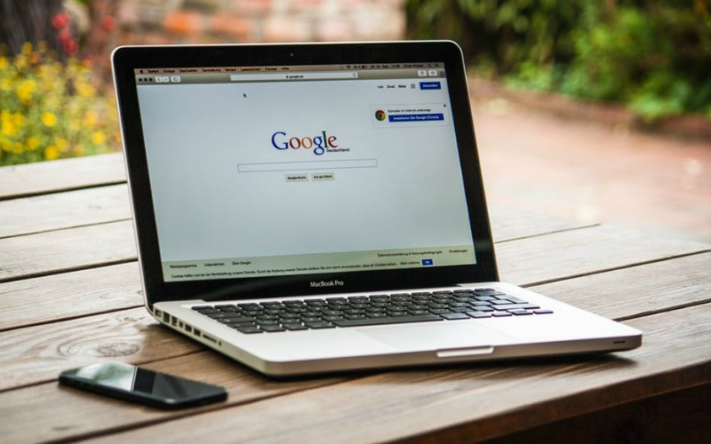

If you’re a frequent user of Google’s Image search,
then you probably noticed that the company recently removed
the ‘View Image” button from search results.
The button would allow you to look at a full-size version of a
photo without having to visit the page where it’s published.
For instance, you might be able to look at the big picture of a
laptop I posted above without ever seeing this post that it’s attached to.
It was useful if you wanted to snag a picture to use for something
like your desktop background or the top of a Facebook event, but it
also caused a good deal of copyright infringement, leading Google to
remove the option thanks to a new deal it made with Getty Images.
If you were a frequent user of the feature, you can still get a
similar experience through another search engine: Startpage.
The browser is focused on privacy and provides Google’s
search results but with no targeted ads and more privacy.
Also, as Ghacks notes, it still has a “View Image” button that
can be used exactly how the old one was on Google proper.
If you’re one of the many missing the feature, then it’s
definitely worth a look.
Author: Greg Lewinsky